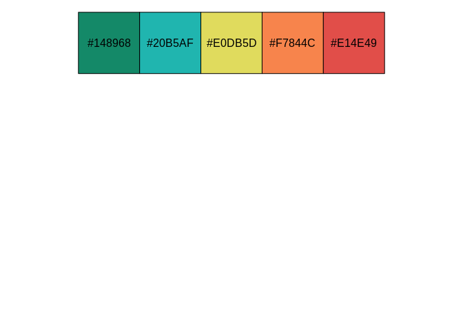

The goal of polite is to promote responsible web etiquette.
“bow and scrape” (verb):
1) To make a deep bow with the right leg drawn back (thus scraping the floor), left hand pressed across the abdomen, right arm held aside.
2) (idiomatic, by extension) To behave in a servile, obsequious, or excessively polite manner.
1
Source: Wiktionary, The free dictionary
The package’s two main functions bow and scrape define and realize a web harvesting session. bow is used to introduce the client to the host and ask for permission to scrape (by inquiring against the host’s robots.txt file), while scrape is the main function for retrieving data from the remote server. Once the connection is established, there’s no need to bow again. Rather, in order to adjust a scraping URL the user can simply nod to the new path, which updates the session’s URL, making sure that the new location can be negotiated against robots.txt.
The three pillars of a polite session are seeking permission, taking slowly and never asking twice.
The package builds on awesome toolkits for defining and managing http sessions (httr and rvest), declaring the user agent string and investigating site policies (robotstxt), and utilizing rate-limiting and response caching (ratelimitr and memoise).
Installation
You can install polite from CRAN with:
install.packages("polite")
Development version of the package can be installed from Github with:
install.packages("remotes") remotes::install_github("dmi3kno/polite")
Basic Example
This is a basic example which shows how to retrieve the list of semi-soft cheeses from www.cheese.com. Here, we authenticate a session and then scrape the page with specified parameters. Behind the scenes polite retrieves robots.txt, checks the URL and user agent string against it, caches the call to robots.txt and to the web page and enforces rate limiting.
library(polite) library(rvest) session <- bow("https://www.cheese.com/by_type", force = TRUE) result <- scrape(session, query=list(t="semi-soft", per_page=100)) %>% html_node("#main-body") %>% html_nodes("h3") %>% html_text() head(result) #> [1] "3-Cheese Italian Blend" "Abbaye de Citeaux" #> [3] "Abbaye du Mont des Cats" "Adelost" #> [5] "ADL Brick Cheese" "Ailsa Craig"
Extended Example
You can build your own functions that incorporate bow, scrape (and, if required, nod). Here we will extend our inquiry into cheeses and will download all cheese names and URLs to their information pages. Let’s retrieve the number of pages per letter in the alphabetical list, keeping the number of results per page to 100 to minimize number of web requests.
library(polite) library(rvest) library(purrr) library(dplyr) session <- bow("https://www.cheese.com/alphabetical") # this is only to illustrate the example. letters <- letters[1:3] # delete this line to scrape all letters responses <- map(letters, ~scrape(session, query = list(per_page=100,i=.x)) ) results <- map(responses, ~html_nodes(.x, "#id_page li") %>% html_text(trim = TRUE) %>% as.numeric() %>% tail(1) ) %>% map(~pluck(.x, 1, .default=1)) pages_df <- tibble(letter = rep.int(letters, times=unlist(results)), pages = unlist(map(results, ~seq.int(from=1, to=.x)))) pages_df #> # A tibble: 6 x 2 #> letter pages #> <chr> <int> #> 1 a 1 #> 2 b 1 #> 3 b 2 #> 4 c 1 #> 5 c 2 #> 6 c 3
Now that we know how many pages to retrieve from each letter page, let’s rotate over letter pages and retrieve cheese names and underlying links to cheese details. We will need to write a helper function. Our session is still valid and we don’t need to nod again, because we will not be modifying a page URL, only its parameters (note that the field url is missing from scrape function).
get_cheese_page <- function(letter, pages){ lnks <- scrape(session, query=list(per_page=100,i=letter,page=pages)) %>% html_nodes("h3 a") tibble(name=lnks %>% html_text(), link=lnks %>% html_attr("href")) } df <- pages_df %>% pmap_df(get_cheese_page) df #> # A tibble: 516 x 2 #> name link #> <chr> <chr> #> 1 "Abbaye de Belloc" /abbaye-de-belloc/ #> 2 "Abbaye de Belval" /abbaye-de-belval/ #> 3 "Abbaye de Citeaux" /abbaye-de-citeaux/ #> 4 "Abbaye de Timadeuc" /abbaye-de-timadeuc/ #> 5 "Abbaye du Mont des Cats" /abbaye-du-mont-des-cats/ #> 6 "Abbot’s Gold" /abbots-gold/ #> 7 "Abertam" /abertam/ #> 8 "Abondance" /abondance/ #> 9 "Acapella" /acapella/ #> 10 "Accasciato " /accasciato/ #> # … with 506 more rows
Another example
Bob Rudis is one the vocal proponents of an online etiquette in the R community. If you have never seen his robots.txt file, you should definitely check it out! Lets look at his blog. We don’t know how many pages will the gallery return, so we keep going until there’s no more “Older posts” button. Note that I first bow to the host and then simply nod to the current scraping page inside the while loop.
library(polite)
library(rvest)
hrbrmstr_posts <- data.frame()
url <- "https://rud.is/b/"
session <- bow(url)
while(!is.na(url)){
# make it verbose
message("Scraping ", url)
# nod and scrape
current_page <- nod(session, url) %>%
scrape(verbose=TRUE)
# extract post titles
hrbrmstr_posts <- current_page %>%
html_nodes(".entry-title a") %>%
polite::html_attrs_dfr() %>%
rbind(hrbrmstr_posts)
# see if there's "Older posts" button
url <- current_page %>%
html_node(".nav-previous a") %>%
html_attr("href")
} # end while loop
tibble::as_tibble(hrbrmstr_posts)
#> # A tibble: 578 x3
We organize the data into the tidy format and append it to our empty data frame. At the end we will discover that Bob has written over 570 blog articles, which I very much recommend anyone to check out.
Polite for package developers
If you are developing a package which accesses the web, polite can be used either as a template, or as a backend for your polite web session.
Polite template
Just before its ascension to CRAN, the package acquired new functionality for helping package developers get started on creating polite web tools for the users. Any modern package developer is probably familiar with excellent usethis package by Rstudio team. usethis is a collection of scripts for automating package development workflow. Many usethis functions automating repetitive tasks start with prefix use_ indicating that what followed will be adopted and “used” by the package user developes. For details about use_ family of functions, see package documentation.
{polite} has one usethis-like function called polite::use_manners().
polite::use_manners()
When called within the analysis (or package) directory, it creates a new file called R/polite-scrape.R (creating R directory if necessary) and populates it with template functions for creating polite web-scraping session. The functions provided by polite::use_manners() are drop-in replacements for two of the most popular tools in web-accessing R ecosystem: read_html() and download.file(). The only difference is that these functions have polite_ prefix. In all other respects they should have look and feel of the original, i.e. in most cases you should be able to simply replace calls to read_html() with polite_read_html() and download.file with polite_download_file() and your code should work (provided you scrape from a url, which it the first required argument in both functions).
Polite backend
Recent addition to polite package is a purrr-like adverb politely() which can make any web-accessing function “polite” by wrapping it with a code which delivers on four pillars of polite session:
Introduce Yourself, Seek Permission, Take Slowly and Never Ask Twice.
Adverbs can be useful, when a user (package developer) wants to “delegate” polite session handling to external package, without modifying the existing code. The only thing user needs to do is wrap existing verb with politely() and use the new function instead of the original.
Let’s say you wanted to use httr::GET for accessing certain API, such as musicbrainz and extract certain data from a deeply nested list, returned by the server. Your originally developed code looks like this:
library(magrittr) #> #> Attaching package: 'magrittr' #> The following object is masked from 'package:purrr': #> #> set_names library(httr) library(xml2) library(purrr) beatles_res <- GET("https://musicbrainz.org/ws/2/artist/", query=list(query="Beatles", limit=10), httr::accept("application/json")) if(!is.null(beatles_res)) beatles_lst <- httr::content(beatles_res, type = "application/json") str(beatles_lst, max.level = 2) #> List of 4 #> $ created: chr "2020-06-16T13:27:09.252Z" #> $ count : int 129 #> $ offset : int 0 #> $ artists:List of 10 #> ..$ :List of 13 #> ..$ :List of 12 #> ..$ :List of 8 #> ..$ :List of 10 #> ..$ :List of 9 #> ..$ :List of 5 #> ..$ :List of 11 #> ..$ :List of 11 #> ..$ :List of 10 #> ..$ :List of 10
This code does not comply with polite principles. It does not provide human-readable user-agent string, it does not consult robots.txt about permissions. It is possible to run this code in the loop and (accidentally) overwhelm the server with requests. It does not cache the results, so if this code is re-run again, data will be re-queried.
You could write your own infastructure for handling useragent, robots.txt, rate limiting and memoisation, or you could simply use an adverb politely() which does all of these things for you.
Querying colormind.io with polite backend
Here’s an example from using colormind.io API. We will need a couple of service functions to convert colors between HEX and RGB and to prepare a json required by the service.
rgba2hex <- function(r,g,b,a) {grDevices::rgb(r, g, b, a, maxColorValue = 255)} hex2rgba <- function(x, alpha=TRUE){t(grDevices::col2rgb(x, alpha = alpha))} prepare_colormind_query <- function(x, model){ lst <- list(model=model) if(!is.null(x)){ x <- utils::head(c(x, rep(NA_character_, times=4)), 5) # pad it with NAs x_mat <- hex2rgba(x) x_lst <- lapply(seq_len(nrow(x_mat)), function(i) if(x_mat[i,4]==0) "N" else x_mat[i,1:3]) lst <- c(list(input=x_lst), lst) } jsonlite::toJSON(lst, auto_unbox = TRUE) }
Now all we have to do is to “wrap” existing function in the politely adverb. Then call the new function insted of original. You dont need to change anything other than a function name.
polite_GET <- politely(httr::GET, verbose=TRUE) #res <- httr::GET("http://colormind.io/list") # was res <- polite_GET("http://colormind.io/list") # now #> Fetching robots.txt #> rt_robotstxt_http_getter: normal http get #> Warning in request_handler_handler(request = request, handler = on_not_found, : #> Event: on_not_found #> Warning in request_handler_handler(request = request, handler = #> on_file_type_mismatch, : Event: on_file_type_mismatch #> Warning in request_handler_handler(request = request, handler = #> on_suspect_content, : Event: on_suspect_content #> #> New copy robots.txt was fetched from http://colormind.io/robots.txt #> Total of 0 crawl delay rule(s) defined for this host. #> Your rate will be set to 1 request every 5 second(s). #> Pausing... #> Scraping: http://colormind.io/list #> Setting useragent: polite R (3.6.3 x86_64-pc-linux-gnu x86_64 linux-gnu) bot jsonlite::fromJSON(httr::content(res, as = "text"))$result #> [1] "ui" "default" "city_photography" #> [4] "makoto_shinkai" "sunset_photography" "only_god_forgives"
The backend functionality of polite can be used for any function as long as it has url argument (or the first argument is a url). Here’s an example of polite POST created with adverb politely.
polite_POST <- politely(POST, verbose=TRUE) clue_colors <-c(NA, "lightseagreen", NA, "coral", NA) req <- prepare_colormind_query(clue_colors, "default") #res <- httr::POST(url='http://colormind.io/api/', body = req) #was res <- polite_POST(url='http://colormind.io/api/', body = req) #now #> Fetching robots.txt #> rt_robotstxt_http_getter: cached http get #> Warning in request_handler_handler(request = request, handler = on_not_found, : #> Event: on_not_found #> Warning in request_handler_handler(request = request, handler = #> on_file_type_mismatch, : Event: on_file_type_mismatch #> Warning in request_handler_handler(request = request, handler = #> on_suspect_content, : Event: on_suspect_content #> #> Found the cached version of robots.txt for http://colormind.io/robots.txt #> Total of 0 crawl delay rule(s) defined for this host. #> Your rate will be set to 1 request every 5 second(s). #> Pausing... #> Scraping: http://colormind.io/api/ #> Setting useragent: polite R (3.6.3 x86_64-pc-linux-gnu x86_64 linux-gnu) bot res_json <- httr::content(res, as = "text") res_mcol <- jsonlite::fromJSON(res_json)$result colrs <- rgba2hex(res_mcol) scales::show_col(colrs, ncol = 5)

Querying musicbrainz API with polite backend
Musicbrainz API allows querying data on artists, releases, labels and all things music. API endpoint, unfortunately, is Disallowed in robots.txt, but it is completely legal to access for small size requests. Mass querying is easier using a datadump, with musicbrainz published periodically. We can create polite GET and turn off robots.txt validation.
library(polite) polite_GET_nrt <- politely(GET, verbose=TRUE, robots = FALSE) # turn off robotstxt checking beatles_lst <- polite_GET_nrt("https://musicbrainz.org/ws/2/artist/", query=list(query="Beatles", limit=10), httr::accept("application/json")) %>% httr::content(type = "application/json") #> Pausing... #> Scraping: https://musicbrainz.org/ws/2/artist/ #> Setting useragent: polite R (3.6.3 x86_64-pc-linux-gnu x86_64 linux-gnu) bot str(beatles_lst, max.level = 2) #> List of 4 #> $ created: chr "2020-06-16T13:27:09.252Z" #> $ count : int 129 #> $ offset : int 0 #> $ artists:List of 10 #> ..$ :List of 13 #> ..$ :List of 12 #> ..$ :List of 8 #> ..$ :List of 10 #> ..$ :List of 9 #> ..$ :List of 5 #> ..$ :List of 11 #> ..$ :List of 11 #> ..$ :List of 10 #> ..$ :List of 10
Lets parse the response
options(knitr.kable.NA = '') beatles_lst %>% extract2("artists") %>% {tibble::tibble(id=map_chr(.,"id", .default=NA_character_), match_pct=map_int(.,"score", .default=NA_character_), type=map_chr(.,"type", .default=NA_character_), name=map_chr(., "name", .default=NA_character_), country=map_chr(., "country", .default=NA_character_), lifespan_begin=map_chr(., c("life-span", "begin"),.default=NA_character_), lifespan_end=map_chr(., c("life-span", "end"),.default=NA_character_) ) } %>% knitr::kable(col.names = c(id="Musicbrainz ID", match_pct="Match, %", type="Type", name="Name of artist", country="Country", lifespan_begin="Career begun", lifespan_end="Career ended"))
| Musicbrainz ID | Match, % | Type | Name of artist | Country | Career begun | Career ended |
|---|---|---|---|---|---|---|
| b10bbbfc-cf9e-42e0-be17-e2c3e1d2600d | 100 | Group | The Beatles | GB | 1957-03 | 1970-04-10 |
| 5e685f9e-83bb-423c-acfa-487e34f15ffd | 76 | Group | The Tape-beatles | US | 1986-12 | |
| e897e5fc-2707-49c8-8605-be82b4664dc5 | 75 | Group | Sex Beatles | |||
| 1019b551-eba7-4e7c-bc7d-eb427ef54df2 | 75 | Group | Blues Beatles | BR | ||
| bc569a61-dd62-4758-86c6-e99dcb1fdda6 | 74 | Tokyo Beatles | JP | |||
| 3133aeb8-9982-4e11-a8ff-5477996a80bf | 74 | Beatles Chillout | ||||
| 35574687-3a4d-4b30-a01a-43fea73b3430 | 74 | Group | Them Beatles | GB | ||
| de0769fa-7c32-4706-9c8c-03631c90f208 | 74 | Group | Shitty Beatles | 2005 | 2015-04-19 | |
| ad60d963-44f1-4b41-b785-8284edcaaffe | 74 | Group | Counterfeit Beatles | GB | ||
| 7cac6d47-ef4e-4347-8835-63ed3f2e74a7 | 74 | Group | Beatles Back2Back | AU | 2011 |
Learn more
Package logo uses elements of a free image by pngtree.com
1
Wiktionary (2018), The free dictionary, retrieved from https://en.wiktionary.org/wiki/bow_and_scrape